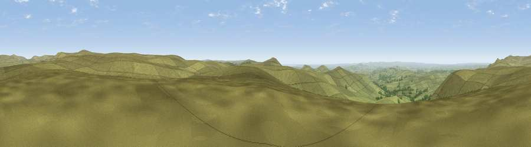

Viewpoint near Peter Tavy
#6229 in England · top 8% of its area beats it · near Peter TavyThe view, rendered

A 360° render of this exact spot computed from the terrain model, tree cover and land cover — summer colours, afternoon light, calibrated against photographs of famous viewpoints. Real trees, hedges and buildings will differ in detail.
The panorama
Grey silhouette: terrain skyline in each direction (720 bearings, Earth curvature and refraction included). Dashed green: skyline with trees (+15 m) and buildings (+8 m) as obstacles. Blue strip: how far the ground is visible on each bearing.
Where the view opens
Wedge length = distance to the farthest visible ground on that bearing (vegetation-aware). Rings at 10, 25 and 50 km.
What fills the view
95% grassland · 4% woodland ·
Angular shares of the visible panorama (visual magnitude), not map area. Landscape diversity 0.11 (0–1 Shannon).
Key numbers
More beautiful places nearby
The staircase of upgrades: each row has a higher view potential than everything closer. Driving times are estimates from straight-line distance, calibrated against real road routing — check an actual route before setting out.
| Place | Direction | Drive | Score |
|---|---|---|---|
| White Tor | SW · 3 km | ~7 min | 74.4 |
| Viewpoint near Princetown | S · 4 km | ~9 min | 77.0 |
| Great Links Tor | NNW · 6 km | ~13 min | 77.8 |
| Yes Tor | N · 10 km | ~19 min | 78.5 |
| Viewpoint near Dousland | S · 11 km | ~20 min | 81.0 |
| Shell Top | SSE · 17 km | ~30 min | 81.8 |
| Viewpoint near Lee Moor | S · 18 km | ~31 min | 82.7 |
| Viewpoint near Downderry | SW · 35 km | ~53 min | 83.5 |
50.60754, -4.02901 · source: screening · position refined by local search. Computed location — check access rights before visiting.